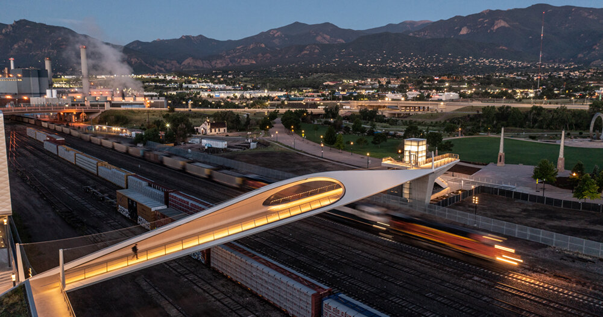
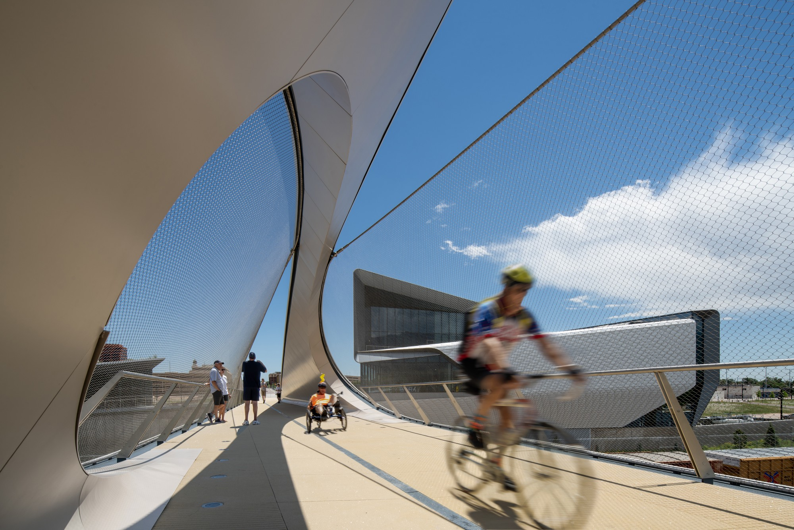
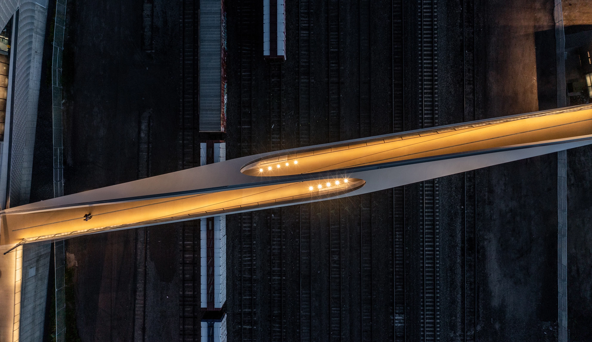
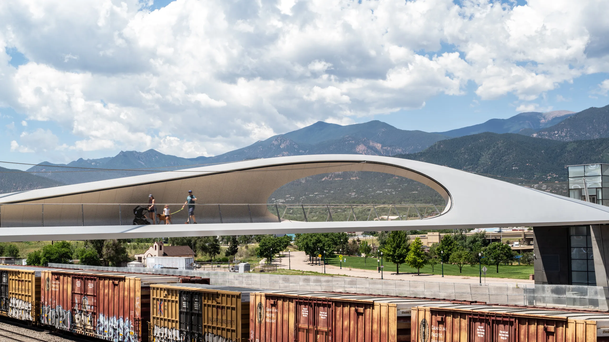
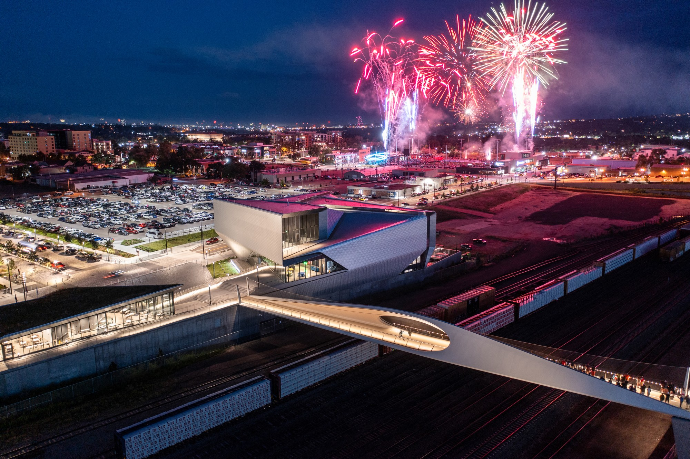
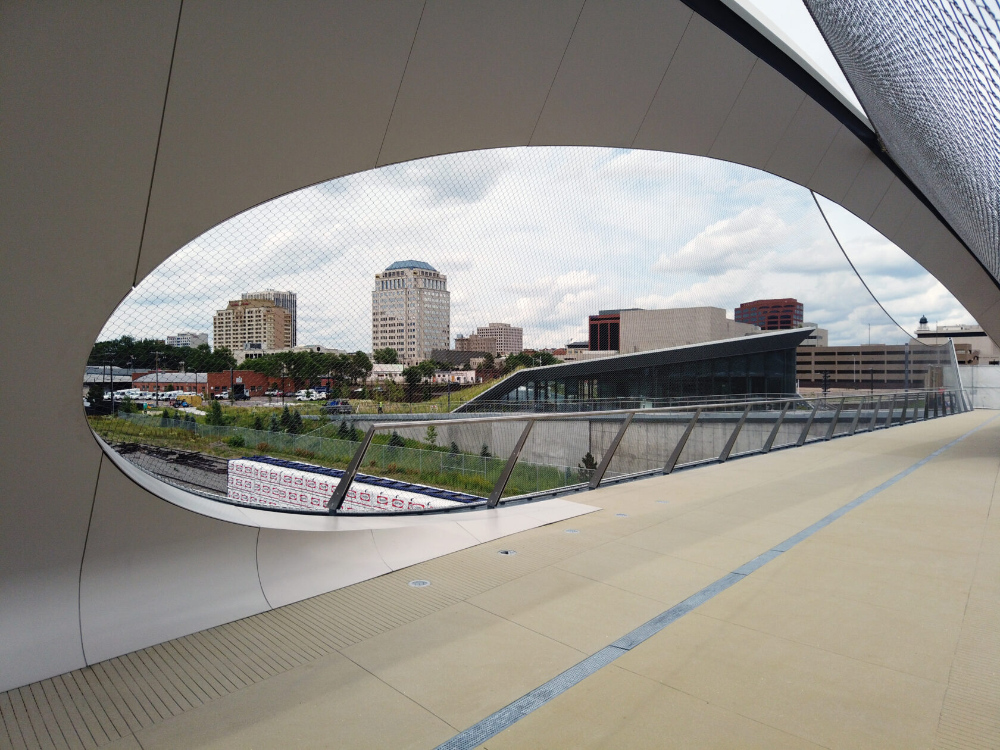
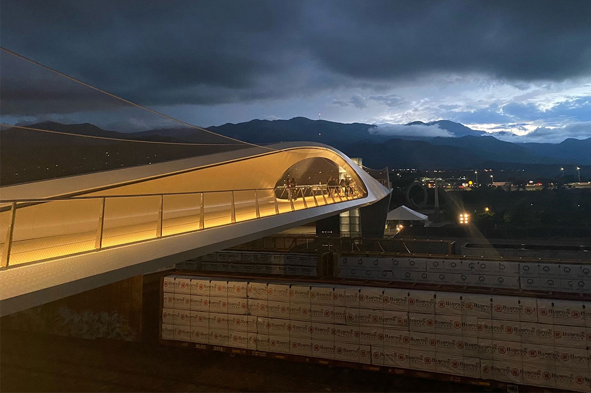

The Design
Park Union Bridge provides a vital urban link for Colorado Springs, spanning over an active railyard that previously acted as a barrier. By extending the east-west axis of Vermijo Avenue to the America the Beautiful Park, the new pedestrian bridge reconnects the urban fabric of downtown Colorado Springs. The bridge also stitches together a growing network of pedestrian bicycle paths including the Pikes Peak Greenway and Midland Trail running alongside Monument Creek. The new pedestrian bridge takes its inspiration from the gravity-defying motion of athletes, with a 250-foot curved steel structure that floats above the railyard. Two interlocked loops, stretching from either side of the railyard, connect the museum and the park. DS+R Partner-in-Charge and Lead Designer Benjamin Gilmartin noted, “The bridge is an exercise in fitness - both in terms of material and geometry. The hybrid steel structure system functions as an arch and a truss, elegantly preserving views from Downtown to the majestic mountain ranges of Pikes Peak.” The bridge’s generous width safely accommodates pedestrians and cyclists alike. At it’s widest point, an oculus at either side of the bridge frames the museum and downtown to the east, a platform for trainspotting below, and a distinct look out to the Rocky Mountain to the west. In the evenings, lighting along the bridge traces a single vector from one side of the tracks to the other, giving a sense of speed and motion while providing illumination for pedestrians and cyclists. The prefabricated bridge was assembled in a staging area in Houston, Texas and a full fit-up was conducted in May 2020. The pieces were driven into place using self-propelled modular transporters over the course of a single weekend, minimizing outage for the rail lines and yard. As bridge sections were delivered, the bridge was assembled on the ground to weld each section together. Assembly of the bridge sections was completed at the end of June 2020. In October 2020, the bridge was hoisted and placed onto its abutments in its entirety in a carefully orchestrated process completed within an eight-hour window.
Gallery






Credits
Main Credits
- Partners
- Ricardo Scofidio, Elizabeth Diller, Benjamin Gilmartin, and Charles Renfro
- Project Director
- Holly Deichmann and Merica May Jenson
- Project Leaders
- Sean Gallagher
- Designers
- Yushiro Okamoto and Ryan Botts
External Credits
- Anderson Mason Dale
- Executive Architect
- Arup
- Structural Engineer
- KL&A
- Structural Engineer (Bridge Abutments)
- King Fabrication
- Steel Fabricator
- Kiewit Construction
- General Contractor
- Tillotson Design
- Lighting Consultant
- Felsburg Holt & Ullevig
- Railroad Consultant
- Terracon
- Onsight Inspector